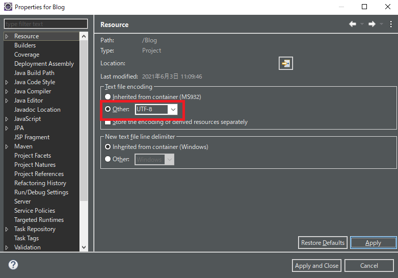
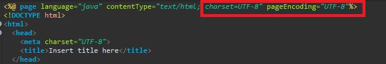
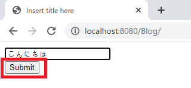
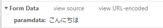
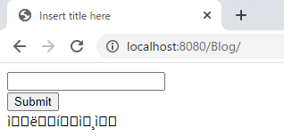
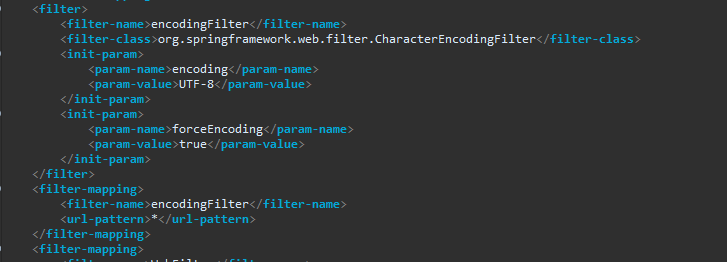
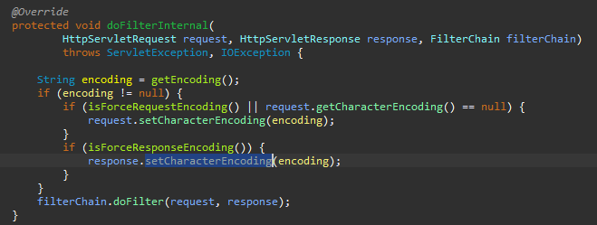
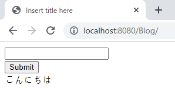

[Java] 55. Spring frameworkに文字化けを解決する方法(Encoding設定)
こんにちは。明月です。
この投稿はSpring frameworkに文字化けを解決する方法(Encoding設定)に関する説明です。
Eclipseで我々がプログラムを作成する時、基本的にファイルの文字コードを設定します。


上の例はjavaファイルとjspファイルに設定した文字コードですが、その以外にxmlファイルやpropertiesファイルにも我々は基本的にUTF-8を設定します。
このことはファイルに関する文字コードなのでサーバとクライアント間の通信の文字コードではありません。つまり、ブラウザから要請する時、その中では要請ヘッダー値があるし、このヘッダーの文字コードを指定しなければならないです。
また、ブラウザから要請したことをまた、controllerの値とviewのデータをパーシングして返却するけど、ここにも文字コードの設定が必要です。
<%@ page language="java" contentType="text/html; charset=UTF-8" pageEncoding="UTF-8"%>
<!DOCTYPE html>
<html>
<head>
<meta charset="UTF-8">
<title>Insert title here</title>
</head>
<body>
<!-- 要請する時にヘッダーデータを送るためのformタグ -->
<form method="post">
<!-- テキストボックス -->
<input type="text" name="paramdata"><br />
<!-- submitボタン -->
<input type="submit">
</form>
<!-- modelmapから貰うデータ -->
${Data}
</body>
</html>
package controller;
import javax.servlet.http.HttpServletRequest;
import javax.servlet.http.HttpServletResponse;
import javax.servlet.http.HttpSession;
import org.springframework.stereotype.Controller;
import org.springframework.ui.ModelMap;
import org.springframework.web.bind.annotation.RequestMapping;
import org.springframework.web.bind.annotation.RequestMethod;
import org.springframework.web.bind.annotation.RequestParam;
@Controller
public class Home {
// 要請urlパターン(index.html) - get方式で要請する場合
@RequestMapping(value = "/index.html", method = RequestMethod.GET)
public String index(ModelMap modelmap, HttpSession session, HttpServletRequest req, HttpServletResponse res) {
// modelmapにデータ設定
modelmap.addAttribute("Data", "");
return "index";
}
// 要請urlパターン(index.html) - submitボタンを押下してpost方式で要請する場合
@RequestMapping(value = "/index.html", method = RequestMethod.POST)
public String post(@RequestParam String paramdata, ModelMap modelmap, HttpSession session, HttpServletRequest req, HttpServletResponse res) {
// modelmapにデータ設定
modelmap.addAttribute("Data", paramdata);
return "index";
}
}

上のソースを作成して起動すればindex関数が呼び出してindex.jspファイルがパーシングになってテキストボックスとsubmitボタンがある画面が表示されます。
そしてtextboxで'こんにちは'というデータを入れてsubmitボタンを押下するとtextboxのデータがname名でparamdataの変数名に設定してformデータでpost関数が呼び出します。そしてパラメータparamdataでデータを受け取ってmodelmapのDataが設定された後、index.jspファイルがパーシングしてブラウザで応答します。


予想する結果はsubmitボタンの下に'こんにちは'というデータが表示することを予想しますが、文字化けになってどの文字か分からない文字になりました。
ここで我々はブラウザで要請するデータを文字コードを変換しなければならないです。
まず、web.xmlのfilter設定でSpringframeworkの文字コードを設定しましょう。
<!-- すべての要請はencodingFilterのフィルダー名を呼び出す。 -->
<filter-mapping>
<filter-name>encodingFilter</filter-name>
<url-pattern>*</url-pattern>
</filter-mapping>
<!-- encodingパターン(Postなどのヘッダー値のエンコード設定) -->
<filter>
<!-- フィルター名を設定 - encodingFilter -->
<filter-name>encodingFilter</filter-name>
<!-- 呼び出すクラス名を設定(package名含め) -->
<filter-class>org.springframework.web.filter.CharacterEncodingFilter</filter-class>
<!-- クラスに使うパラメータデータ -->
<init-param>
<!-- 文字コード設定 -->
<param-name>encoding</param-name>
<param-value>UTF-8</param-value>
</init-param>
<init-param>
<!-- 文字コードを強制変換設定 -->
<param-name>forceEncoding</param-name>
<param-value>true</param-value>
</init-param>
</filter>

link - CharacterEncodingFilter.html
filterに関するには以前の投稿で説明したことがあります。
link - [Java] 54. Spring frameworkでWeb filterを使う方法
文字変換クラスをフィルターに反映するとブラウザのすべての要請はCharacterEncodingFilterクラスを通ることになります。

そこですべての要請の文字コートは自動に設定され、controllerを呼び出します。その後は文字コードが設定された後なので文字化けがなくなります。

ここには文字化けを解決する方法に関して説明しましたが、実はFilterをセッション確認に使うログイン認証確認の以外に使う方法に関する説明でした。
様々なFilterをどの方法で使えるかを考えて見ましたが、よく使う文字化けの解決する方法のことを例にして説明しました。
ここまでSpring frameworkに文字化けを解決する方法(Encoding設定)に関する説明でした。
ご不明なところや間違いところがあればコメントしてください。
- [Java] 56. Web serviceのサーブレット(Servlet)で初期化作業(properties設定)2021/07/02 17:10:36
- [Java] 55. Spring frameworkに文字化けを解決する方法(Encoding設定)2021/06/30 16:37:16
- [Java] 54. Spring frameworkでWeb filterを使う方法2021/06/29 18:25:12
- [Java] 53. ウェブサービス(Web service)でエラーページを処理する方法2021/06/25 13:35:54
- [Java] 52. SpringフレームワークでDAOをFactory method Patternを利用して依存性注入する方法2019/10/17 07:15:48
- [Java] 51. SpringフレームワークでJPAを使い方(依存性注入@Autowired)2019/10/16 07:32:55
- [Java] 50. JPAプロジェクトでDAOクラスを作成する方法2019/10/15 20:12:35
- [Java] 49. JPAでトランザクション(transaction)を扱う方法と共通関数作成する方法(Observerパターン)2019/10/14 20:13:44
- [Java] 48. JPAでQueryを使う方法(JPQLクエリを作成する方法)2019/10/13 22:55:52
- [Design pattern] 1-5. プロトタイプパターン(Prototype pattern)2021/10/22 19:35:45
- [Project design] プログラム検証とテスト - Unitテスト2021/10/22 19:34:09
- [C#] 57. コーティング規約2021/10/21 18:57:02
- [C#] 56. 値の初期化及び基本データ値(default)を設定する方法、そして原始データのnull処理、?と??の使い方2021/10/21 18:54:41
- [C#] 55.namespaceとusing、そしてpartialの使い方2021/10/21 18:51:39
- [C#] 54. Reflection機能を使い方 - Attribute2021/10/20 19:29:31
- [Project design] プログラム制作(コーディング) - クラス作成方法2021/10/20 19:28:09
- [C#] 53. Reflection機能を使い方 - Propertyとevent2021/10/19 21:02:58
- [Project design] プログラム制作(コーディング) - 関数作成方法2021/10/19 21:01:32
- [CentOs] ジェンキンス(Jenkins)をインストールする方法2021/10/18 18:28:58
- [Project design] 詳細設計(インターフェース設計と抽象化作業)2021/10/18 18:23:15
- [Project design] 基本設計(画面設計とDB設計)2021/10/17 21:21:11
- [Design pattern] 1-4. デザインパターンの抽象ファクトリーパターン(Abstract factory pattern)2021/10/15 19:31:03
- [Project design] 要件定義(要求事項整理)2021/10/15 19:28:58
- [C#] 52. Reflection機能を使い方 - Variable2021/10/15 19:27:37